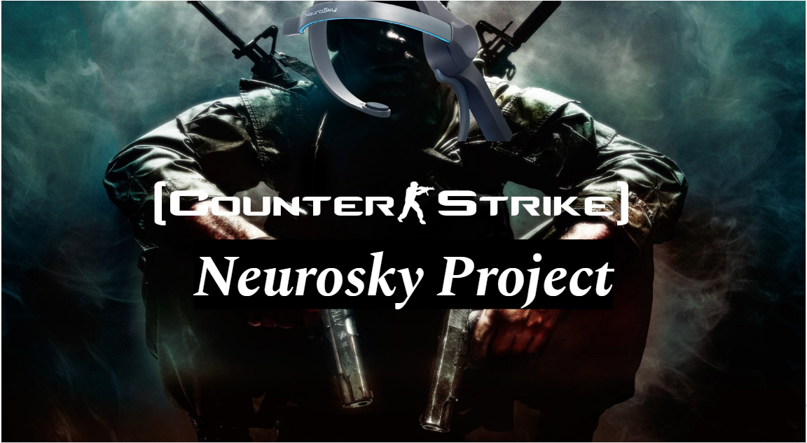
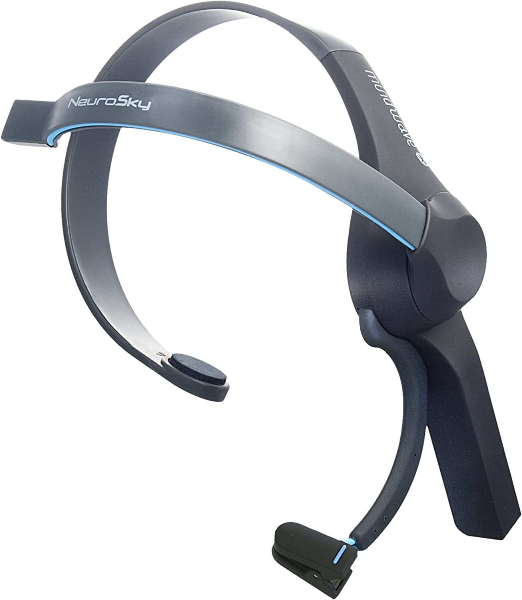
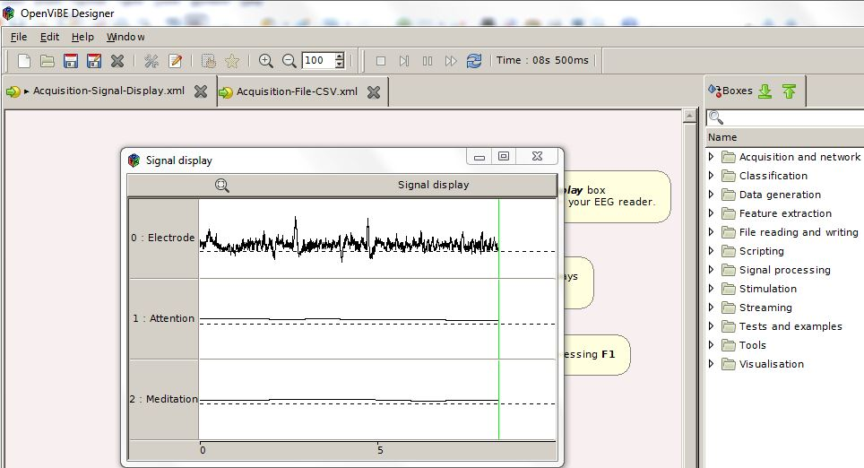
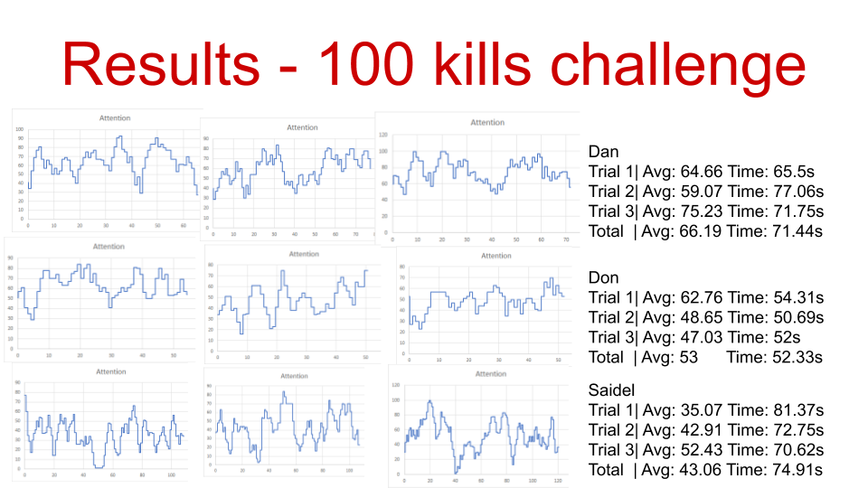
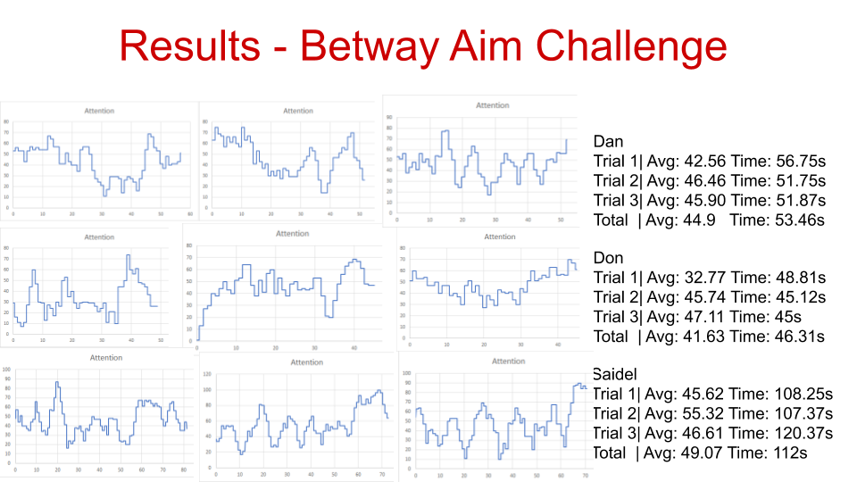
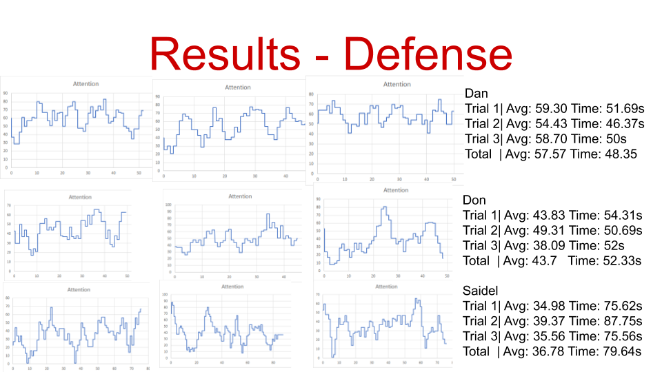
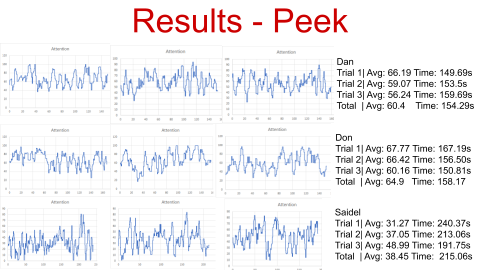
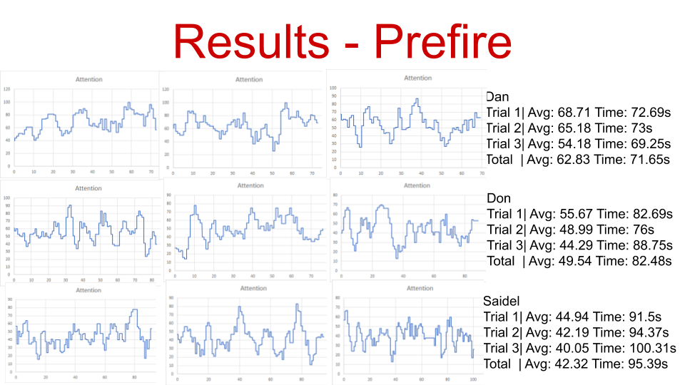

Counter-Strike: Global Offensive Neurosky Project
Team: Dan Tran, Martin Shung, Saidel Halol, Sai Annapragada
Contribution: Mostly on Methods and Results Compilation
Timeframe: Feb-Mar 2020
Introduction
In one course in interaction design, my team and I were interested to see how brain wave signals differ based on skill level, in particular brain waves that tend to be associated with attention. We wanted to focus on gaming, so we decided to pick a video game that was popular and requires lots of skill. We decided to go with Counter-Strike: Global Offensive because we were familiar with the game and it is a hard game to master. We compared the performance of a beginner and a player who’s played at one of the highest skill groups. It has important implications for skill development because by seeing the differences between highly skilled players and beginners, we can create a more optimal path to improvement based on measuring brain waves.
Hypothesis
We expect the higher skilled players to have a higher attention, while the lower skilled players have a lower attention.
Methods
For recording, we used a NeuroSky headset with the attention algorithm. This is used to record brain waves. We used OpenVibe as a way to record EEG data as a csv file and to see the brain waves in real time.
Neurosky Headset
OpenVibe
For this study, we had three participants. Two of them (Don and Dan) were in the high-skill group, while one of them (Saidel) was in the normal-skill group. They used their own setups (except for speakers or headsets) while wearing the Neurosky headset to make sure they’re as comfortable as possible.
Before doing the experiment, the participants must own a steam account in order to download and install CS:GO (a free game). They also must be somewhat familiar with the game, to the point where they have configured their own settings and aren't feeling too uncomfortable (at least 50 hours played). They must also download three maps from the steam workshop (from either the browser or client) by looking them up and subscribing to them. The three maps are Yprac Dust2, Aim Botz, and Aim Challenge. They have their own scenarios, which we used to compare differences between participants.
Yprac Dust2 - 3 scenarios
Aim_botz - 1 scenario
Aim Challenge - 1 scenario
Here are some videos that can help people setup the scenarios:
How to access the maps in the game
Setting up yprac scenarios
Setting up 100 kills Challenge in Aim_botz
There are 5 scenarios. In each scenario, they are played three times and recorded when they start the scenario. Here are the scenarios each participant has gone through:
Peek
This scenario spawns the player and a stationary bot. When a player kills the bot, it moves the player and a bot to a different situation. This occurs 60 different times, and they’re at spots where a player might be and an enemy might be in an actual game. It tests how well a player predicts where the enemy is and their accuracy.
Prefire
This scenario spawns the player and many stationary bots in predetermined spots. Although this is similar to the Aim Challenge scenario, this is a map that is played in ranked matchmaking, so higher skilled players are more familiar with the angles. Thus, this tests ingame knowledge on common angles, routing, and accuracy.
Defense
The challenge spawns the player and bots are spawned randomly at certain spots. The bots move randomly and there can only be a certain amount of bots at a time, so a player can’t hold the same spot. This tests their dynamic aim and positioning.
Betway Aim Challenge
The challenge spawns the player and has to shoot bots with predetermined spots. It tests speed by how a player routes, how a player efficiently use their ammo, and how fast they can aim.
100 kills Challenge
The challenge spawns bots in front of the player, and the player has to kill the bots as fast as possible. When a bot is killed, a bot will spawn in a different non-occupied spot. This tests the speed of static aim.
Results
After recording one trial from a scenario, there is a csv file of Neurosky’s attention algorithm on EEG data over a period of time. It ranges from 0-100, and the higher the number is, the more attentive a person is. Each image below represents a scenario that was mentioned above and nine graphs that represents what happened during each trial (3 participants and 3 trials for each participant). For each graph, each column represents what trial number it is for the participant, while each row represents the participant. For example, the first graph in Betway Aim Challenge is Dan’s first trial of the Betway Aim Challenge, and the graph in the bottom-right corner represents Saidel’s 3rd trial of the Betway Aim Challenge. The x-axis of each graph represents time in seconds, and the y-axis represents a value that represents attention, based on Neurosky’s attention algorithm.
To summarize our results, we noticed that beginner players show less average attention values and more variance, compared to our advanced players. For example variance of attention values for the 100 kills challenge were 551.8 for Saidel (Beginner), while Dan was 357.5 and Don was 245.8. We can speculate that the beginner might relax after shooting, but the advanced players kept focus and were vigilant. Furthermore, we believe that different players need different amounts of attention to perform well. Variance seems to be a better measure of performance, as it shows consistency in their range of attention. It might mean that variance of attention values as a proxy for performance, similar to how heart rate variability is a proxy for cardiac health.
    Discussion
We noticed there are variables that we couldn’t control. For example, there will be fatigue/discomfort from playing while using the Neurosky headset. We don’t know how much it will affect gameplay and attention. We could have added a break for participants where the players don’t wear the Neurosky headset in between scenarios to accommodate that. We also can’t control the background noise as the computer fans were loud enough to cause some sort of distraction. We also didn’t control peripherals because we opted for comfort vs. isolating gaming gear from skill. We didn’t control computer setups because it’s a pain to move setups around and it’s easier to set up the scenarios into their computer while using a laptop to record the EEG data.
There are also things we could’ve improved on in this study. We could’ve added more trials and more participants. We had such a small sample size that it’s hard to accurately extrapolate, but it wasn’t necessary in the course to do that and we didn’t have enough time to find people. We could’ve also recorded EEG data while subjects played full matches of Counter-Strike: Global Offensive. It would record most of the participant’s skill level, but it’s hard to control. If the participants aren’t playing in the same match, it’s hard to control, and if they are, they won’t be playing in the same spots or do the same plays.